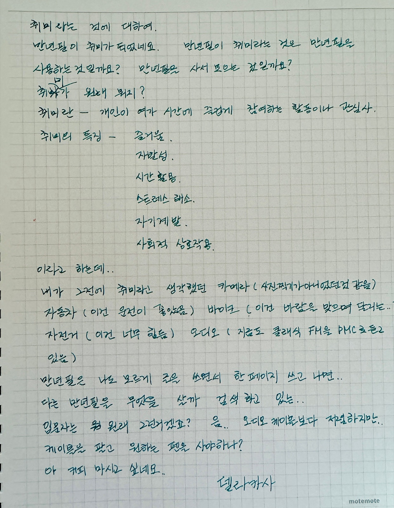
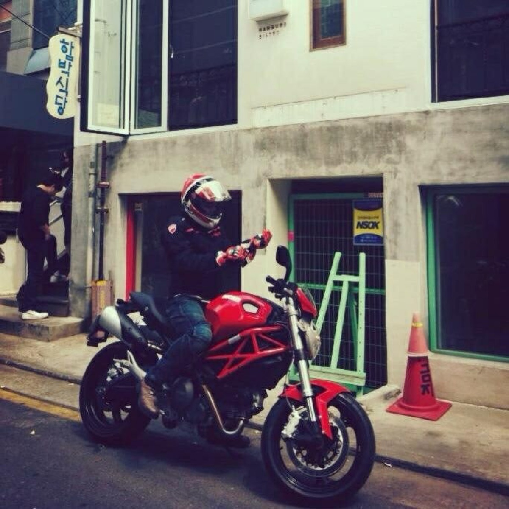
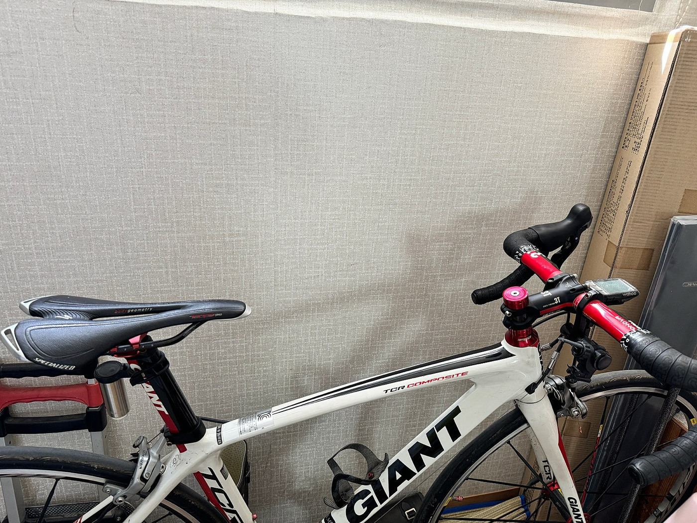
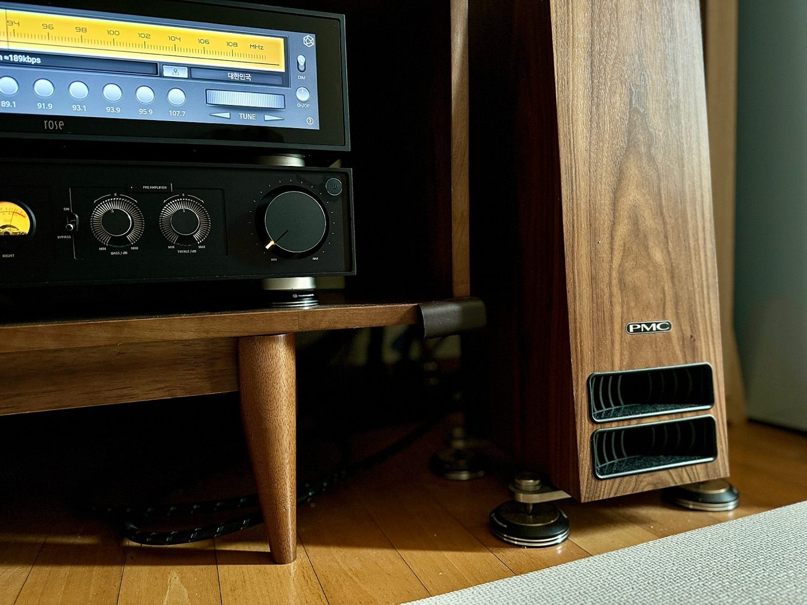
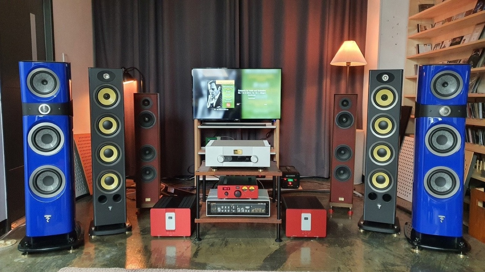
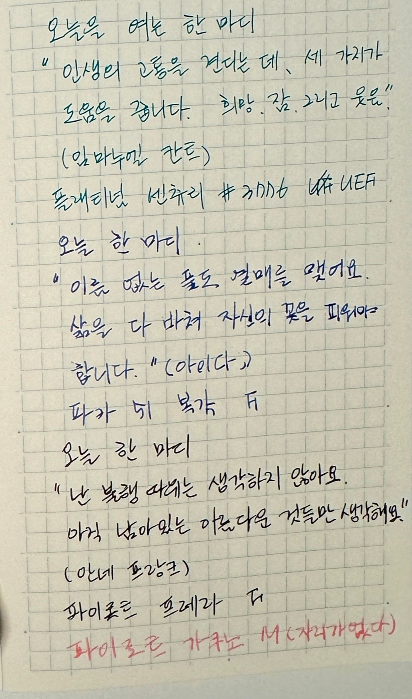

취미라는 것에 대하여.
만년필 / 취미 / 기록
만년필이 취미가 됐네요.
그런데 만년필이 취미라는 건, 정확히 뭘까요. 만년필을 사용하는 건지. 모으는 건지. 문득 그 질문이 생기면서, 취미가 뭔지 다시 생각해보게 됐어요.

취미란 개인이 여가 시간에 즐겁게 참여하는 활동이나 관심사. 취미의 특징을 찾아보면 이렇습니다.
즐거움. 자발성. 시간 활용. 스트레스 해소. 자기계발. 사회적 상호작용. 이라고 하는데.
돌아보면, 내가 취미라고 생각했던 것들이 과연 그랬을까요.


자동차 — 이건 원래 좋아했고.


만년필은 나도 모르게 그냥 쓰게 됐어요.
한 페이지 쓰고 나면, 다른 만년필을 뭘 살까 검색하고 있더라고요. 이유가 명확하지 않을 수도 있는데. 그냥 그 과정이 작은 기쁨이라고 생각해요.

오디오 케이블보다는 저렴하지만, 그보다 큰 만족을 주는 취미입니다.
아 커피 마시고 싶네요.
델라카사